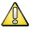

در هر صفحه ای از نرم افزار سایان که باشید می توانید با فشردن کلید F1 راهنمای آن بخش را مشاهده کنید در تصویر زیر در سیستم مالی و حسابداری در بخش تعریف سر فصل حسابها کلید F1 فشرده شده است :

همچنین هنگامی که صفحه ی راهنما باز شد از لیست سمت راست می توانید راهنمای هر بخشی را که می خواهید انتخاب کنید، تصویر زیر لیست راهنمای نرم افزار را با کادر قرمز مشخص کرده است :

در راهنمای نرم افزار برای ذکر نکات مهم و همچنین مواردی که نیاز به توجه کاربر دارد، از شمایلی جهت سهولت در انتقال مطالب استفاده شده است که کاربرد آن ها به شکل ذیل است:
نکات مربوط به نرم افزار که بیشتر بیانگر قابلیت های خاص نرم افزار می باشد با این علامت مشخص شده اند.
 قسمت هایی از مطلب که نیاز به توجه خاص کاربر در هنگام کار با نرم افزار دارد توسط این علامت یادآوری می شود.